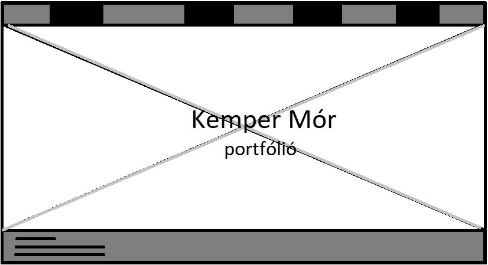
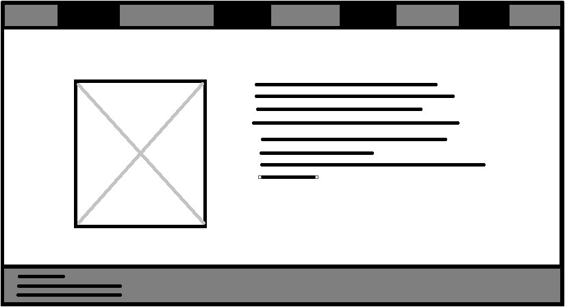
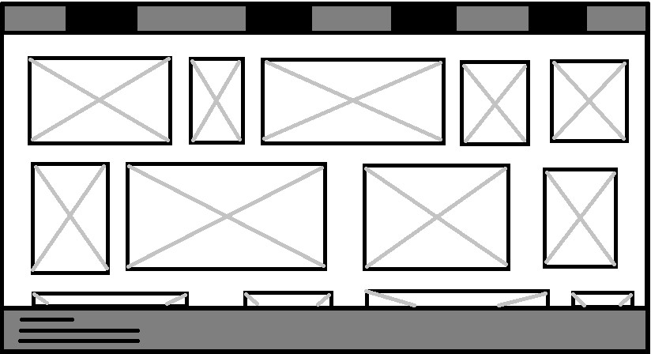

Előkészület:
Amikor megtudtam, hogy oldalt kell majd készítenünk, már akkor tudtam, hogy valami minimalista stílusú lapot szeretnék csinálni. Miután a minimalista stílus mellett döntöttem, így ahhoz odaillő színeket kezdtem el választani. Ez ugye az oldalon látható két szürke árnyalat, egy két részen a fekete vonalak, illetve a fehér háttér. 
Kivitelezés:
A kivitelezés közben többször problémába ütköztem, köszönhetően annak, hogy sosem írtam ezelőtt HTML/CSS kódot. Az eredeti tervem az lett volna, hogy a főoldalon az egyik átalam készített képet teszem be háttérnek, ám a CSS úgy döntött, hogy ő ezt nem hajtja végre, így végül lemondtam erről az ötletről. A fejlécet, láblécet egészen könnyedén megcsináltam. A "Képeim" oldal okozott még jelentősebb fejfájást. A CSS valamiért nem engedett a jelenleg fent lévő képeknél több képet hozzáadni (Ahogy hozzáadtam még 1-1 képet összeomlott az egész flex rendszer). Griddel is próbálkoztam, de az sem vált be. A "Rólam" oldal szintén viszonlag könnyen elkészült egy grid segítségével, szintúgy mint ez az oldal. 
Összegezve:
Az újonnan tanult C#-ról való új nyelvre áttérés ellenére egészen meg vagyok elégedve az általam készített oldallal, de jobban örültem volna, ha minden úgy alakul, ahogy elterveztem. 